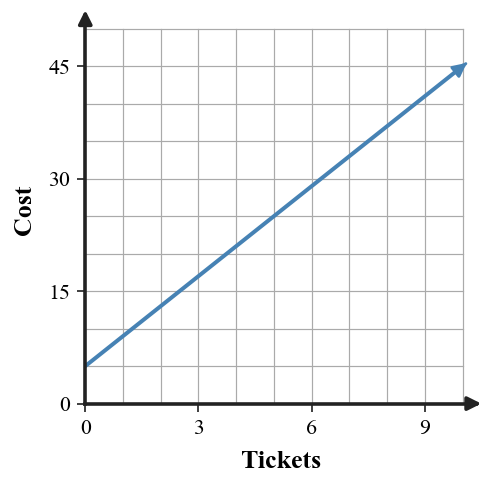
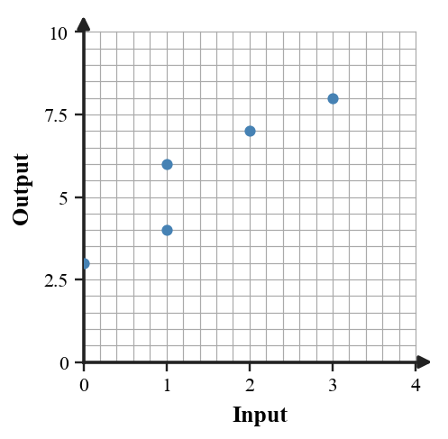
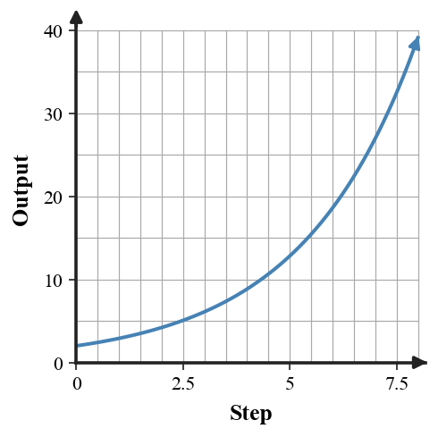
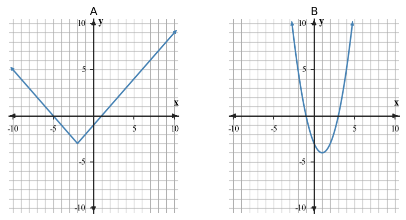

U1-S1-DOK1.01
A school store charges a fixed setup fee and then a price for each notebook. In this context, identify the input quantity and the output quantity.
Essential Standard: Students will represent and interpret relationships by connecting tables, graphs, equations, and contexts that model the same situation.
Learning Target: Students will connect tables, graphs, equations, and contexts that represent the same relationship.
A school store charges a fixed setup fee and then a price for each notebook. In this context, identify the input quantity and the output quantity.
For the rule $y=3x+4$, find the output when the input is $5$.
The table shows a relationship. Write the ordered pair for the column where $x=2$.
| $x$ | 0 | 1 | 2 | 3 |
|---|---|---|---|---|
| $y$ | 5 | 7 | 9 | 11 |
In the context "the total cost is \$8 plus \$2 per game," which number represents the starting value?
Which representation uses points on a coordinate plane: a table, a graph, an equation, or a context?
Use the graph to estimate the output when the input is $2$.

A table has outputs $4, 7, 10, 13$ as inputs increase by $1$. What is the repeated change in the outputs?
For the point $(6,18)$ in a distance graph, which coordinate is the input?
For the equation $d=55t$, identify what $55$ tells you if $d$ is distance in miles and $t$ is time in hours.
The context says, "A tank starts with $40$ gallons and loses $3$ gallons each minute." Does the output increase or decrease as time passes?
Which table row usually lists input values: the $x$ row or the $y$ row?
For the table, identify the output when the input is $-1$.
| $x$ | -2 | -1 | 0 | 1 |
|---|---|---|---|---|
| $y$ | 9 | 6 | 3 | 0 |
In $C=12+4m$, which letter represents the output quantity if $C$ is total cost and $m$ is months?
Name two representations that can show the same relationship without using words.
In the rule "multiply the input by $2$, then subtract $5$," write the operation that happens first.
A graph crosses the vertical axis at $7$. What table value does that help you identify?
A babysitter charges \$10 to travel to the house and \$8 per hour. Complete the table and write an equation for total cost $C$ after $h$ hours.
| $h$ | 0 | 1 | 2 | 3 |
|---|---|---|---|---|
| $C$ |
The table represents a linear relationship. Write an equation for $y$ in terms of $x$.
| $x$ | 0 | 1 | 2 | 3 |
|---|---|---|---|---|
| $y$ | 4 | 7 | 10 | 13 |
The equation $p=5n+2$ represents the number of points $p$ after completing $n$ levels in a game. Write a one-sentence context that matches the starting value and repeated change.
Use the blank coordinate plane to graph the relationship shown in the table.
| $x$ | 0 | 1 | 2 | 3 |
|---|---|---|---|---|
| $y$ | 1 | 3 | 5 | 7 |

A gym membership costs \$25 to join and \$15 each month. Write an equation and use it to find the cost after $6$ months.
Decide whether the table and equation represent the same relationship. Use at least two values as evidence.
Equation: $y=4x-1$
| $x$ | 0 | 1 | 2 | 3 |
|---|---|---|---|---|
| $y$ | -1 | 3 | 7 | 11 |
The graph shows a cost relationship. Use the graph to estimate the cost for $8$ tickets and explain how you used the axes.

Create a table with four input-output pairs for $y=2x-3$, using inputs of your choice. Then state one pattern you notice.
One of these representations does not match the others. Identify it and explain the mismatch.
Context: A plant is $6$ cm tall and grows $2$ cm each week.
Equation: $h=6+2w$
| $w$ | 0 | 1 | 2 | 3 |
|---|---|---|---|---|
| $h$ | 6 | 8 | 10 | 12 |
Claimed point: $(3,10)$
Write an equation for a relationship whose graph would pass through $(0,9)$ and increase by $4$ in output for every $1$ increase in input.
A student says the context "Start with $12$ and add $5$ each step" matches $y=12x+5$. Critique the claim using the roles of starting value and repeated change.
The equation $y=3x+2$ and the table are meant to represent the same relationship. Find the first mismatch, explain how you know, and revise the incorrect value.
| $x$ | 0 | 1 | 2 | 3 |
|---|---|---|---|---|
| $y$ | 2 | 5 | 9 | 11 |
Determine whether the point $(5,17)$ belongs to the relationship shown by $y=3x+2$. Use two methods: one from the equation and one from a table or verbal pattern. Explain which method is more efficient for this point.
Compare the graph and context. Context: A cyclist starts $4$ miles from home and rides away at $2$ miles per hour. Decide whether the graph could model the context and justify your conclusion with the intercept and rate.
Design a connected model for a short situation where a total begins at $6$ and changes by the same amount each step. Include a context, equation, four-row table, and graph on the blank coordinate plane. Make sure all four representations agree.
You are given two facts about one relationship: when $x=0$, $y=9$; when $x=4$, $y=21$. Synthesize a table, equation, context, and one additional point that all represent the same relationship. Explain how each representation shows the same starting value and change.
Learning Target: Students will interpret functions as rules that connect inputs and outputs without relying on formal domain and range language.
For $f(x)=2x+7$, find $f(3)$.
For the ordered pair $(4,11)$, identify the input and the output.
A rule sends $1\to 5$, $2\to 7$, and $3\to 9$. What output goes with input $2$?
In the phrase "temperature depends on time," which quantity is the input?
Does the pair list $(1,4),(2,5),(1,6)$ give one output for each input?
For $g(x)=x^2-1$, find $g(-2)$.
What notation means "the output of $f$ when the input is $8$": $f+8$, $f(8)$, or $8f$?
If a rule gives output $0$ for input $-3$, write the ordered pair.
For $h(x)=10-x$, find the output when the input is $6$.
A vending machine code is the input and the snack is the output. Can one code give two different snacks and still behave like a function?
In $p=4n$, which variable is the output if $n$ is number of notebooks and $p$ is pages?
Use the table to find the output paired with input $5$.
| input | 2 | 3 | 4 | 5 |
|---|---|---|---|---|
| output | 7 | 9 | 11 | 13 |
For $r(x)=|x-5|$, find $r(5)$.
What does a repeated input with two different outputs show about a relation?
If $f(0)=12$, name the input and output in that statement.
For $q(x)=3x$, what input produces output $18$?
For $f(x)=\frac{6}{2x-3}$, find $f(1)$, $f(0)$, and the value of $x$ that makes $f(x)=4$.
Complete the input-output table for $g(x)=\sqrt{x+4}$.
| $x$ | -4 | 0 | 5 | 12 |
|---|---|---|---|---|
| $g(x)$ |
The points shown form a relation. Decide whether the relation gives one output for each input and justify using repeated inputs.

A taxi charges \$4 plus \$2 per mile. Treat miles as the input and cost as the output. Write a rule and find the output for $11$ miles.
Use the graph of $f$ to estimate $f(-2)$ and the input where the output is $1$.

A rule is described as "triple the input, then subtract $8$." Generate four ordered pairs using inputs $0,1,2,3$.
Decide whether the context can be modeled as a function: each student ID number is assigned to one student name. Explain using input-output language.
For $f(x)=|x-3|+5$, find all input values that give an output of $10$.
Complete the table so that each input has exactly one output and the rule is $y=2x-1$.
| $x$ | -1 | 0 | 1 | 2 |
|---|---|---|---|---|
| $y$ |
The table shows a relation. If possible, write a rule using $x$ and $y$. If not possible, explain what prevents one rule from working for the repeated input.
| $x$ | 0 | 1 | 2 | 2 |
|---|---|---|---|---|
| $y$ | 3 | 5 | 7 | 9 |
A rule for a school fundraiser is proposed as $C=25n$, where $n$ is the number of tickets and $C$ is cost. The flyer says there is also a one-time \$10 processing charge. Is the proposed rule reasonable? Explain and revise it if needed.
Build a strategy for deciding whether a list of ordered pairs represents a function without graphing it. Then apply your strategy to $(0,4),(1,6),(2,8),(1,10)$.
Analyze the structure of these two rules: $f(x)=2(x+3)$ and $g(x)=2x+6$. Do they always give the same output for the same input, or only sometimes? Justify with structure and one substitution check.
A student says every relation with four ordered pairs is a function because each ordered pair has one output. Critique the reasoning and use a counterexample to correct it.
A table for an input-output rule is flawed: $(0,3),(1,6),(2,9),(2,12),(3,12)$. Revise the relation in two different ways: one revision that makes it a function with a constant increase, and one revision that makes it a function but not a constant-increase rule. Explain both choices.
Create an input-output rule that meets all constraints: input $0$ has output $5$; input $4$ has output $17$; each input has exactly one output; and the rule can be explained in a real context. Provide a rule, a four-row table, and the context.
Learning Target: Students will recognize common function families from graphs, tables, equations, and contexts.
A table has outputs $3,6,12,24$ as inputs increase by $1$. Which family is most likely: linear, quadratic, exponential, or absolute value?
The equation $y=4x-1$ belongs to which common family?
The equation $y=x^2+3$ belongs to which common family?
The equation $y=2|x-5|+1$ belongs to which common family?
For exponential growth, is the multiplier usually greater than $1$ or between $0$ and $1$?
For exponential decay, is the multiplier usually greater than $1$ or between $0$ and $1$?
A linear table has first differences that are constant. What table pattern do you check first for a quadratic relationship?
What family often has a graph shaped like a V?
What family often has a graph shaped like a U?
Which family models repeated multiplication by the same factor?
Identify the family: $y=7(0.8)^x$.
Identify whether the table has constant differences or constant ratios.
| $x$ | 0 | 1 | 2 | 3 |
|---|---|---|---|---|
| $y$ | 5 | 10 | 20 | 40 |
Which family can model a constant rate of change in a distance-time context?
If a quadratic table has outputs $1,4,9,16$, what familiar parent pattern does it resemble?
Does $y=|x|$ have one output for each input?
Name one feature you can use as evidence for a family choice besides the graph shape.
Use the table to identify the likely family. Support your choice with a pattern in the outputs.
| $x$ | 0 | 1 | 2 | 3 | 4 |
|---|---|---|---|---|---|
| $y$ | 2 | 5 | 10 | 17 | 26 |
Use the grid to build evidence, not just a shape match. For each panel, estimate three ordered pairs or describe a rate, ratio, or symmetry feature from the axes. Then name the likely family and connect it to that evidence.

Create the next two rows of the table and choose the likely family.
| $x$ | 0 | 1 | 2 | 3 | 4 | 5 |
|---|---|---|---|---|---|---|
| $y$ | 1 | 3 | 7 | 13 |
A population starts at $200$ and is multiplied by $1.15$ each year. Write an equation and state whether the model shows growth or decay.
Use equation structure to identify the family and one key feature for $y=-2|x+3|+5$.
The graph shows a growth pattern. Estimate whether a linear or exponential family is more reasonable, then support your answer with how the outputs change.

Decide whether the context is better modeled by a linear or exponential relationship: a phone battery loses about $6$ percentage points each hour. Explain the family evidence.
Compare graphs A and B using evidence from the axes. For each graph, estimate at least two points near the turning point and use symmetry or output changes to identify the likely family.

Write a possible equation for an absolute value function with vertex at $(2,-3)$ and opening upward. Explain how the equation shows the family.
The table has constant first differences of $-4$. Write a linear equation if the output is $18$ when $x=0$.
The equation $y=2x+3$ and the table are supposed to represent the same family and relationship. Locate the mismatch and explain whether the table still looks linear.
| $x$ | 0 | 1 | 2 | 3 |
|---|---|---|---|---|
| $y$ | 3 | 5 | 8 | 9 |
Two students classify the table. Student A checks first differences; Student B checks ratios. Use both methods to decide the family and explain which method gives clearer evidence here.
| $x$ | 0 | 1 | 2 | 3 |
|---|---|---|---|---|
| $y$ | 4 | 8 | 16 | 32 |
A coach records jump heights: $1.0,1.4,1.9,2.5,3.2$ feet. A student claims an exponential model is best because the values increase. Is that reasonable? Use approximate differences or ratios as evidence.
Construct a strategy for choosing among linear, quadratic, exponential, and absolute value families when you have a table but no graph. Apply your strategy to outputs $6,1,-2,-3,-2,1,6$ for consecutive inputs.
A school wants to predict club membership for the next four meetings. Approach A uses a constant increase of $6$ students each meeting from $18$. Approach B multiplies by $1.25$ each meeting from $18$. Recommend one approach for meetings $1$ through $4$ if room capacity is $60$. Support your recommendation with a table and family evidence.
Create two different family examples that both have output $10$ when the input is $0$: one linear and one exponential. For each example, provide an equation, three-row table, and a context where the family choice makes sense.
Learning Target: Students will interpret and rewrite algebraic expressions by identifying structure, meaning, and equivalent forms.
In $5x+12$, identify the coefficient of $x$.
In $3(x+4)$, name the grouped expression.
Which terms are like terms in $7x+2+5x+9$?
Simplify $4x+3x$.
Evaluate $2x+5$ when $x=6$.
Use the distributive property to rewrite $3(x+2)$.
Factor the common factor from $6x+9$.
Which expression is equivalent to $x+x+x+x$?
In the context $4n+10$, what could the $10$ represent if $n$ is the number of tickets?
Does $2(x+5)$ have the same value as $2x+5$ for every $x$?
Combine constants in $8+3x+11$.
Which operation is shown by the parentheses in $5(2x-1)$?
Rewrite $x^2+x^2+x$ by combining like terms.
What value does $-3x$ have when $x=4$?
Which form shows a product: $2x+8$ or $2(x+4)$?
For $7m-2m+6$, identify the simplified variable term.
Simplify by combining like terms: $2x+3x+3+4x^2+10+x$.
Rewrite $4(2x+3)+5x$ in an equivalent simplified form. Show the distribution and combining steps.
The rectangle model represents a product. Fill in the missing cells and write the product as a sum.

Write an expression for the total cost: $5$ notebooks at $n$ dollars each and $3$ folders at $2$ dollars each. Then simplify if possible.
Use substitution to decide whether $3(x+4)$ and $3x+12$ are equivalent for $x=5$ and $x=-2$.
Use the diamond to find two numbers with product $-24$ and sum $2$. Then write a related factored form for $x^2+2x-24$.

Rewrite $12x+18$ as a product using the greatest common factor.
A perimeter is represented by $2(3x+4)+2(x+6)$. Rewrite the expression in simplified form and explain what was doubled.
Complete the table by evaluating each expression at $x=0,1,2$.
| expression | $x=0$ | $x=1$ | $x=2$ |
|---|---|---|---|
| $2x+6$ | |||
| $2(x+3)$ |
Decide whether $(x+5)(x+2)$ has the same expanded form as $x^2+7x+10$. Use distribution or an area model explanation.
Analyze the structure of $4(x+3)+2(x+3)$. Rewrite it in two equivalent ways and explain which form makes the repeated group easiest to see.
Compare the expression $6n+4$ with the context: a club pays a \$6 one-time fee and \$4 per member. Does the expression match the context? Use the meaning of each term to justify your answer.
A student simplified $5(2x-3)+4x$ as $10x-15+4=10x-11$. Critique the error and revise the simplification.
The expression $(x+4)(x+6)$ and the area model are meant to match. Find the mismatch in the model and explain how to fix it.

Create a real context that can be represented by both $8x+20$ and $4(2x+5)$. Then explain what each form reveals about the situation and give one input-output check that confirms equivalence.
A classmate writes the expression $12x+30$ for a rectangle model but cannot explain its structure. Revise the model by giving two equivalent factored forms, choosing the more useful one for finding dimensions, and explaining why.
Learning Target: Students will write, solve, and interpret equations that model situations.
Is $x=4$ a solution to $3x+2=14$?
In $2x+5=17$, which operation should be undone first?
Write the equation shown by: a number plus $9$ equals $20$.
What does a solution to an equation represent in a context?
Check whether $n=6$ satisfies $4n=24$.
In the equation $C=15+3m$, what could $m$ represent if $C$ is cost?
Solve $x-7=12$.
For the equation $5x=35$, name the operation you would use to isolate $x$.
Which equation matches "three more than twice a number is eleven": $2x+3=11$ or $3x+2=11$?
For $p+4=10$, name the inverse operation used to solve.
Is the solution to $x+2=8$ greater than $8$ or less than $8$?
In $18=6+2t$, identify the variable.
Substitute $x=3$ into $4x-1$.
What equation can check whether $7$ is the answer to "a number minus $5$ is $2$"?
Does $2(x+3)=2x+6$ hold for $x=0$?
What should an interpreted solution include besides the number?
A movie rental service charges \$6 plus \$3 per movie. Write and solve an equation to find how many movies can be rented for \$27.
Solve $4(x-2)+6=30$ and show each step.
Quinn has twice as many cards as Denali, then gives away $4$ cards. Quinn now has $18$ cards. Write and solve an equation for how many cards Denali started with.
The equation $12+4s=44$ models a bus situation. Solve for $s$ and write a sentence explaining what the solution means in context.
Solve $\frac{x}{5}+7=13$ and interpret what the first step does to the equation.
The graph shows two cost models. Estimate the value of $x$ where the costs are equal, then write the equation that the intersection represents.

Write an equation and solve: four more than three times a number is $31$.
Check the proposed solution. A student says $x=5$ solves $7x-4=31$. Substitute and decide whether the solution is correct.
A rectangle has perimeter $54$ inches. Its length is $3$ inches more than its width $w$. Write and solve an equation for $w$.
Complete the solve-and-interpret table for $2x+9=25$.
| step | equation | meaning |
|---|---|---|
| given | $2x+9=25$ | total is $25$ |
| subtract $9$ | ||
| divide by $2$ |
Two students solve $3(x+4)=30$. Student A divides by $3$ first. Student B distributes first. Use both methods to solve, then explain which method is more efficient and why.
A concert ticket costs \$18 plus a \$4 service fee. A student writes $18+4t=90$ to find the number of tickets bought with \$90. Decide whether the model is reasonable and revise it if needed.
Construct a strategy for translating a context into an equation before solving. Apply your strategy to: a phone plan charges \$12 plus \$5 per gigabyte and the total bill is \$47.
Analyze the structure of $5x+10=5(x+2)$. Is this equation always true, never true, or true for some values of $x$? Justify using structure and a substitution check.
Design a one-variable equation model for a realistic school or club situation where the solution is $8$. Include the context, define the variable, write the equation, solve it, and interpret why $8$ makes sense.
A fundraiser can use Plan A: pay \$40 upfront and \$2 per item, or Plan B: pay \$10 upfront and \$5 per item. Recommend which plan is better for $12$ items and find the break-even number of items. Support your recommendation with equations and interpretation.